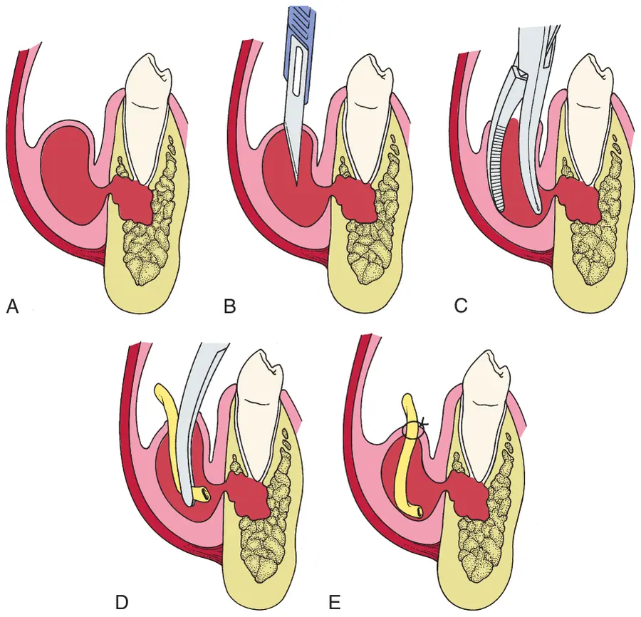

نسخه استخراجشده؛ ترجمه یا تأیید علمی انجام نشده است. وضعیت: captured
بگذار روشن بگوییم: باید فهمید که هدف تخلیهی جراحی صرفاً «برداشتن چرک» نیست.

بلکه سه هدف دارد:
و یک نتیجهی بسیار مهم بالینی از همین سه هدف: برش و تخلیه تنها به آبسهها اختصاص ندارد، بلکه میتواند ترمیم سلولیت را هم از راه همان سازوکار تسهیل کند — یعنی کاهش بار باکتریایی و کاهش فشار بافتی موضعی.
و یک نکتهی دیگر: تخلیهی جراحی در سلولیت میتواند برای بهبود عروقرسانی جهت ترمیم و نفوذ آنتیبیوتیک سیستمیک هم در نظر گرفته شود.
و یک هشدار قاطع: تخلیهی جراحی باید از تخلیهی سادهی چرک تفکیک شود. اعمالی مانند آسپیراسیون با سوزن، نقش کمی یا هیچ نقشی در مدیریت قطعی عفونتهای اودنتوژنیک ندارند.
و در سوی دیگر — دو موقعیتی که برش و تخلیه لازم نیست: نبود تورم، و مرحلهی اولیهی تلقیح، جایی که تورم نرم، منتشر و تنها اندکی حساس است. با این حال این نکته را دستکم نگیر: بیشتر سایر موقعیتهای عفونت اودنتوژنیک، نیازمند تخلیهی جراحیاند.
نخستین گام مدیریت جراحی، تعیین مناسبترین مسیر دسترسی برای برش و تخلیه است.
و پیش از هر چیز، درمانگر باید مطمئن شود که بیمار دامنهی حرکتی کافی مندیبل دارد تا اجازهی دسترسی کافی برای برش، اکسپلور و تخلیهی ناحیهی عفونی را بدهد.
و یک نکتهی بسیار کاربردی دربارهی تریسموس: وقتی دسترسی ناکافی تشخیص داده میشود، میتوان از بیدردی و کاهش اضطراب استفاده کرد — چون محدودیت باز شدن دهان همراه با عفونت فضای وستیبولار، تقریباً همیشه ناشی از محافظت از درد (guarding) است.
و اگر این اقدامات دسترسی داخلدهانی را بهتر نکنند، بیمار باید بیدرنگ به جراح دهان و فک و صورت ارجاع داده شود.
گام بعدی، خودِ برش است. و قاعدهی کلی: برش مستقیماً روی ناحیهی حداکثر تورم گذاشته میشود تا تخلیهی وابسته به جاذبه ممکن شود.
ولی دو قید مهم دارد:
و برش باید بهاندازهی کافی بلند و عمیق باشد: دستکم ۱۰ تا ۱۵ میلیمتر طول، و در عمق دستکم از مخاط و زیرمخاط بگذرد. اشتباه رایج، برشی است که بیش از حد سطحی، کوتاه یا هر دو باشد: برش سطحی به چرک زیرین نمیرسد و بافت را دکمپرس نمیکند، و برش کوتاه اجازهی اکسپلور کامل نمیدهد.
و برای اعمال برش و تخلیهی خارجدهانی در عفونتهای پیچیده، عوامل دیگری هم باید در نظر گرفته شوند: جای زخم صورت، و آسیب بالقوهی عروقی و عصب فاسیال.